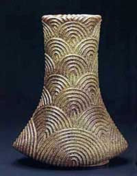
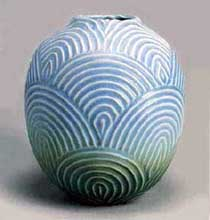
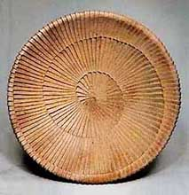
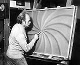

| Gerd
Knäpper
German studio potter resident in Japan
Gerd
Knäpper's story is truly an amazing one. Knäpper
studied in Germany with Host Kerstan and in Japan with Seisei Suzuki.
In 1968, he moved to the Japanese pottery town of Mashiko, building
the first foreign owned workshop there. In 1975 he moved to Daigo,
north of Mashiko.
In 1971, after having lived and worked in Japan for only two 30
months, he was awarded the Grand Prize for Traditional Japanese
Ceramics at the First National Competition in Tokyo, stunning the
Japanese pottery community. In 1986 he won the Prime Minister's
Award at the Japan Contemporary Crafts Association exhibition. In
1991 he was awarded the Order of Merit by the German government
in recognition of his achievements in ceramics and in bringing together
East and West.

In
his pottery, Knäpper blends German and Japanese aesthetics.
His wheel-thrown pottery is carved, fluted, scratched and glazed,
then wood-fired in a traditional Japanese kiln. He also makes stylized
figurative sculpture and since 2000 he has also been involved in
architectural
commissions.
Knäpper says his "work is inspired by primitive and modern art
of various cultures. I don’t consider myself a Japanese artist
nor a German artist. Based on my unique position, my work inherits
an independent structure with elements of the East and of the West".
He is currently looking forward to the completion in March 2006
of a new 'Gatehouse' and the opening of his Tarosaka Gallery.
More Articles
More Artists of the Week
|